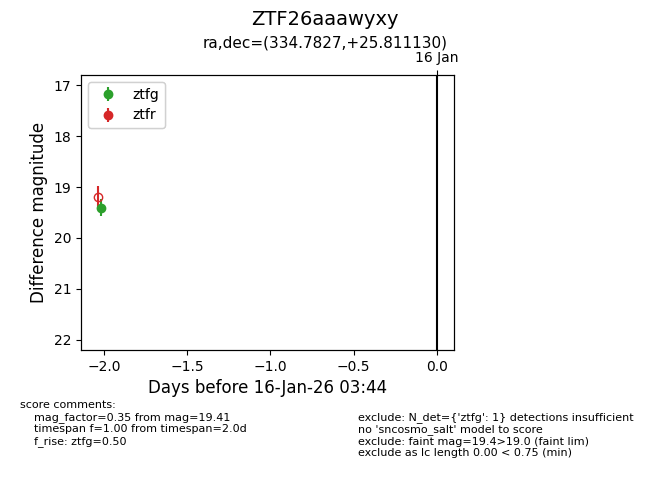
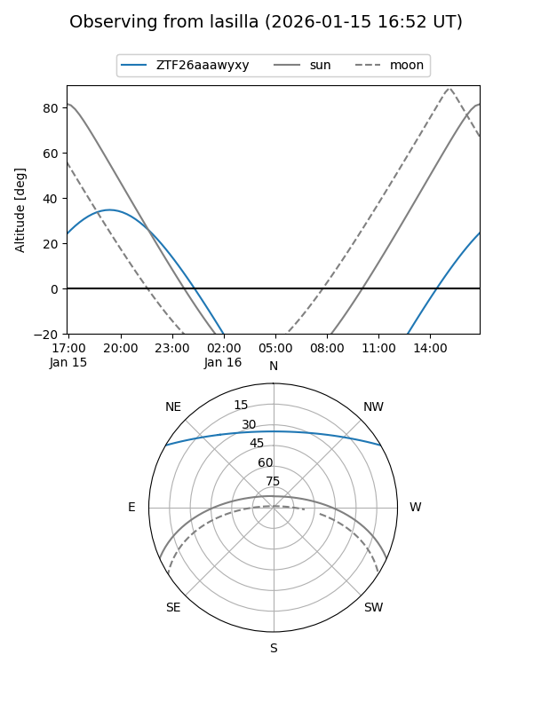
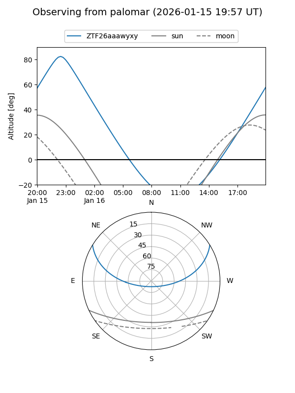

ZTF26aaawyxy
Target ZTF26aaawyxy at 2026-01-16 03:45
Aliases and brokers:
FINK: link
Lasair: link
ALeRCE: link
alt names
ZTF26aaawyxy (ztf,fink_ztf)
Coordinates:
equatorial (ra, dec) = 334.7827,+25.81113
equatorial (HMS+DMS) = 22:19:07.86,+25:48:40.07
galactic (l, b) = (84.9331,-25.60429)
Flags:
Photometry:
last ztfg=19.41
1 ztfg detections
Lightcurve

Visibility


Additional plots